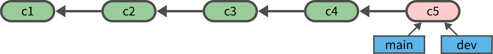

cd $HOME/lab
rm -rf test_graph_01
git init test_graph_01
cd test_graph_01커밋 그래프
- 커밋 객체는 부모 커밋을 가리키므로 커밋을 계속하면 사슬 형태의 커밋 연결관계가 생긴다.

- 브랜치 기능을 사용하면 하나의 부모 커밋이 여러개의 자식 커밋을 가질 수도 있다.
- 머지 기능을 사용하면 하나의 자식 커밋이 2개의 부모 커밋을 가질 수도 있다.

- 따라서 일반적인 경우에 커밋 객체들은 컴퓨터 과학에서 말하는 그래프(graph) 구조를 가진다.
말단 커밋과 브랜치
- 말단 커밋(leaf commit)
- 자신을 가리키는 자식 커밋이 없는 커밋
- 브랜치(branch)
- 말단 커밋에 대한 참조 이름
- 하나의 말단 커밋이 여러개의 브랜치(참조 이름)를 가질 수 있다.


커밋 기록을 살피기 위한 명령
| 명령 | 설명 |
|---|---|
git log |
과거부터 현재까지의 모든 커밋 기록 보기 |
git ls-tree |
특정 커밋의 스냅샷 파일 목록 보기 |
git cat-file |
특정 커밋의 파일 내용 보기 |
git show |
특정 커밋의 변경 내역 보기 |
git diff |
커밋간의 차이 보기 |
실습
- 레포지토리 생성
Initialized empty Git repository in /test_graph_01/.git/
- 최초 커밋
echo "file1 line 1" >> file1.txt
git add .
git commit -m c1[main (root-commit) 66192b6] c1
1 file changed, 1 insertion(+)
create mode 100644 file1.txtecho "file1 line 2" >> file1.txt
echo "file2 line 1" >> file2.txt
git add .
git commit -m c2[main 9b748fe] c2
2 files changed, 2 insertions(+)
create mode 100644 file2.txtgit rm file1.txt
mkdir sub
echo "file3 line 1" >> sub/file3.txt
git add .
git commit -m c3rm 'file1.txt'
[main 562697b] c3
2 files changed, 1 insertion(+), 2 deletions(-)
delete mode 100644 file1.txt
create mode 100644 sub/file3.txt
상대 참조 표기
- 특정 커밋 위치로부터 N번 앞(과거)의 커밋은
~N을 커밋 해시값 뒤에 붙여서 상대 참조 표기로 나타낼 수 있다. - 현재의 커밋은 커밋 해시값 대신
HEAD를 사용할 수 있다. 따라서 - 현재 커밋 바로 앞의 커밋(부모 커밋)은
HEAD~1 - 현재 커밋 2번재 앞 커밋(조부모 커밋)은
HEAD~2 - 앞(과거)이 아닌 뒤(미래)의 커밋은 복수가 있는 경우가 있어 상대 참조 표기를 사용하지 않는다.
git log 명령
- 과거부터 현재까지의 모든 커밋 기록 보기
git logcommit 562697bad755c97bee1883b1bb425ed69c1dddc3 (HEAD -> main)
Author: user <user@company.com>
Date: Tue Aug 19 17:23:43 2025 +0900
c3
commit 9b748feb74b0e675e066a6ba5326d78b26e66c01
Author: user <user@company.com>
Date: Tue Aug 19 17:23:43 2025 +0900
c2
commit 66192b6dad54c4a0d0addf2de724cc03b0f94f70
Author: user <user@company.com>
Date: Tue Aug 19 17:23:42 2025 +0900
c1git log 명령의 옵션
출력 형식
- 출력형식은
--pretty옵션으로 제어git log --pretty=medium: 기본값 (해시 + 작성자 + 날짜 + 메시지)git log --pretty=short: 간단한 정보 (해시 + 작성자 + 메시지)git log --pretty=oneline: 한 줄 출력 (해시 + 메시지)git log --oneline: 한 줄 출력 (단축해시 + 메시지)git log --pretty=format:사용자 정의 형식 출력
git log --pretty=shortcommit 562697bad755c97bee1883b1bb425ed69c1dddc3 (HEAD -> main)
Author: user <user@company.com>
c3
commit 9b748feb74b0e675e066a6ba5326d78b26e66c01
Author: user <user@company.com>
c2
commit 66192b6dad54c4a0d0addf2de724cc03b0f94f70
Author: user <user@company.com>
c1git log --pretty=oneline562697bad755c97bee1883b1bb425ed69c1dddc3 (HEAD -> main) c3
9b748feb74b0e675e066a6ba5326d78b26e66c01 c2
66192b6dad54c4a0d0addf2de724cc03b0f94f70 c1git log --oneline562697b (HEAD -> main) c3
9b748fe c2
66192b6 c1git log --pretty=format:"%h %s"562697b c3
9b748fe c2
66192b6 c1출력 내용
--stat: 변경 파일 목록 및 간단한 통계
git log --oneline --stat562697b (HEAD -> main) c3
file1.txt | 2 --
sub/file3.txt | 1 +
2 files changed, 1 insertion(+), 2 deletions(-)
9b748fe c2
file1.txt | 1 +
file2.txt | 1 +
2 files changed, 2 insertions(+)
66192b6 c1
file1.txt | 1 +
1 file changed, 1 insertion(+)git log --oneline --numstat562697b (HEAD -> main) c3
0 2 file1.txt
1 0 sub/file3.txt
9b748fe c2
1 0 file1.txt
1 0 file2.txt
66192b6 c1
1 0 file1.txt출력 필터링
git log <파일>: 특정 파일/경로에 대한 변경만 출력.git log --author="이름": 특정 작성자(committer/author)의 커밋만 출력.git log --grep="키워드": 커밋 메시지에 키워드가 포함된 것만 검색.git log --since="2024-01-01": 특정 날짜 이후 커밋만 출력.git log --until="2024-08-01": 특정 날짜 이전 커밋만 출력.git log <commit1>..<commit2>:
git log --oneline file2.txt9b748fe c2git log --all --oneline -- file1.txt562697b (HEAD -> main) c3
9b748fe c2
66192b6 c1git ls-tree 명령
- 특정 커밋의 스냅샷 보기
git ls-tree -r --name-only HEAD~2file1.txtgit ls-tree -r --name-only HEAD~1file1.txt
file2.txtgit ls-tree -r --name-only HEADfile2.txt
sub/file3.txtgit cat-file 명령
git cat-file -p HEAD~2:file1.txtfile1 line 1git cat-file -p HEAD~1:file1.txtfile1 line 1
file1 line 2git cat-file -p HEAD~1:file2.txtfile2 line 1git cat-file -p HEAD:file2.txtfile2 line 1git cat-file -p HEAD:sub/file3.txtfile3 line 1git show 명령
- 특정 커밋의 변경 내역 보기
git show --name-status HEAD~2commit 66192b6dad54c4a0d0addf2de724cc03b0f94f70
Author: user <user@company.com>
Date: Tue Aug 19 17:23:42 2025 +0900
c1
A file1.txtgit show --name-status HEAD~1commit 9b748feb74b0e675e066a6ba5326d78b26e66c01
Author: user <user@company.com>
Date: Tue Aug 19 17:23:43 2025 +0900
c2
M file1.txt
A file2.txtgit show --name-status HEADcommit 562697bad755c97bee1883b1bb425ed69c1dddc3 (HEAD -> main)
Author: user <user@company.com>
Date: Tue Aug 19 17:23:43 2025 +0900
c3
D file1.txt
A sub/file3.txtgit diff 명령
- 커밋과 커밋간의 차이를 보기